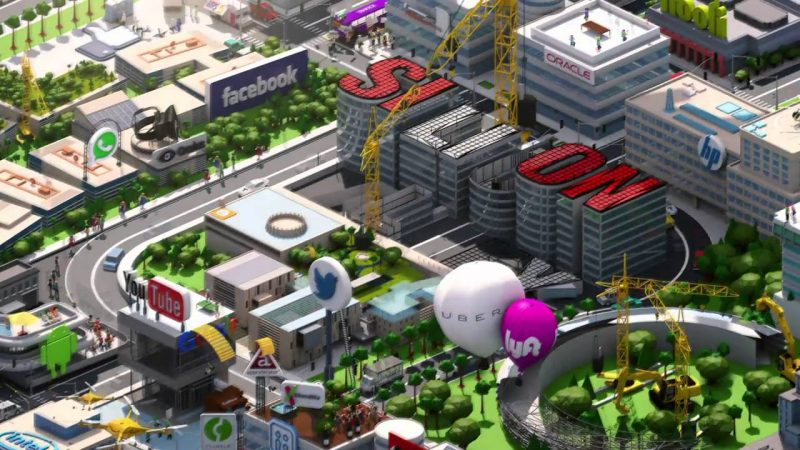

|
|
Altyapısı güçlü yenilikçi ve teknoloji tabanlı kalkınma ve büyümenin benimsendiği yeni bir düşünce ve felsefenin Türkiye’deki en önemli temsilcisi olarak yola çıkıyoruz. Bilişim Vadisi’nin ruhunu oluşturacak olan toplumdaki üretken ve yaratıcı tüm insanlar, özellikle zeki ve başarılı öğrenciler, üretken bilim insanları, girişimciler, yatırımcılar, araştırmacılar, danışman-mentörler, teknisyenler ve diğer profesyoneller ile birlikte “Türkiye’nin İnovasyon ve Teknoloji Tabanlı Büyümedeki Yeni Merkezi’ni” kuruyoruz. Bilişim Vadisi, bilişim ve iletişim teknolojileri alanındaki küresel ve yerel inovasyon ve teknoloji transfer merkezleri, üniversiteler, araştırma enstitüleri, uluslararası ve ulusal yatırımcılar ve fonlar, konunun muhatabı tüm sivil toplum örgütleri, özel sektör ve devletin tüm kamusal alanı ile iş birliği yapacak ve proje bazlı müşterek çalışmalar geliştirerek teknoloji tabanlı kalkınmaya önderlik etmek için harekete geçiyor. |
||||
|  |